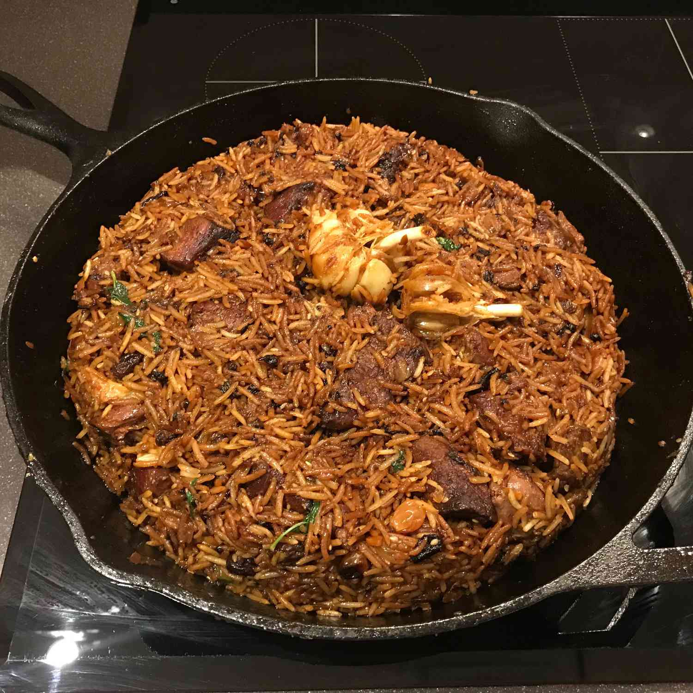

Uzbek Plov

Ingredients
- 2 cups basmati rice
- 4 whole heads garlic
- ½ cup vegetable oil
- 2 pounds boneless leg of lamb, cut into 3-inch pieces
- 2 large onions, thinly sliced
- 5 large carrots, coarsely grated
- ½ cup fresh barberries
- 2 tablespoons cumin seeds
- 2 tablespoons coriander seeds
- 1 teaspoon whole black peppercorns
- 2 cups boiling water to cover
- 2 tablespoons salt
Directions
-
Place basmati rice in a large bowl; cover with warm water and set aside.
Wash whole heads garlic; set aside.
-
Heat vegetable oil in a Dutch oven or large skillet over high heat
until smoking. Add lamb; cook, turning occasionally,
until evenly browned, about 10 minutes. Stir in onions; cook and stir
until softened and browned, about 10 minutes. Stir in carrots; cook and
stir until softened, about 10 minutes. Add barberries, cumin, coriander,
and peppercorns; drop whole heads garlic into Dutch oven, stirring
to evenly distribute. Reduce heat to medium. Cover and cook 30 minutes.
-
Wash and drain basmati rice with hot water; add to Dutch oven in an even
layer on top of lamb. Slowly pour in 2 cups boiling water. The rice should
be covered with about 3/4-inch water. Do not stir. Season with salt; reduce
heat to medium-low. Cover and cook until rice is tender and liquid absorbed,
about 20 minutes. Stir rice and lamb together; serve with whole garlic
heads on top.
Nutrition Facts
- Calories: ...497
- Fat:...23g
- Carbs:...56g
- Protein:...19g